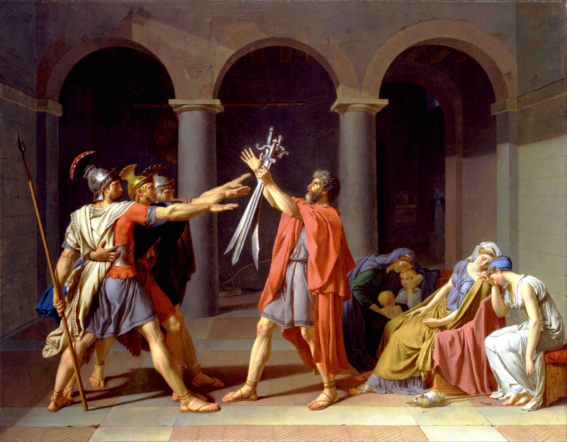

Introduction
Classicism and Romanticism are two musical periods that are closely connected. There is no sudden break between them, but rather a gradual transition. Some composers, especially Ludwig van Beethoven, act as a bridge between a style based on balance and order and another one focused on emotion and personal expression.
|
Classicism

|
Romanticism

|